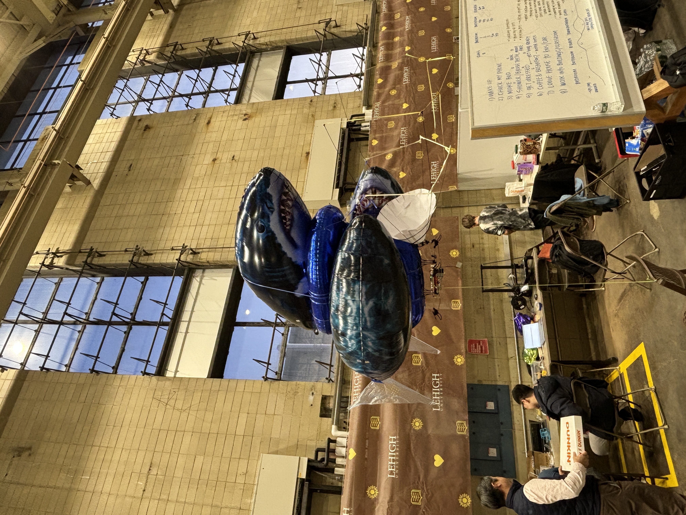
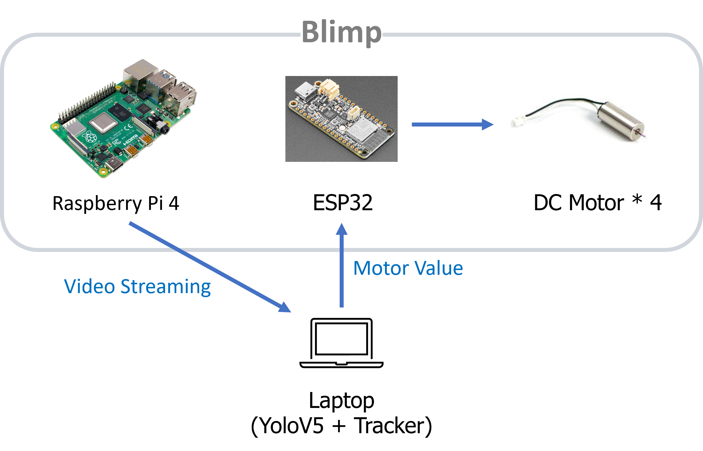

Lighter-Than-Air Robot for a Light Drone Competition
Aerial Robotics / Embedded Systems / Visual Tracking
Overview
During my visiting research at Drexel University's Intelligent Machine Perception and Learning (IMAPLE) Lab, I worked on a lighter-than-air robot for the Defend the Republic – Light Drone Competition. Helium balloons support a lightweight structure built from balsa wood, carbon pipes, and 3D-printed parts.

Physical Platform
The design combines helium buoyancy with a lightweight frame carrying the control electronics and motors. Construction materials include:
- Helium balloons for buoyancy.
- Balsa wood and carbon pipes for the frame.
- 3D-printed components.
The prototype's reported mass is 100 g considering helium buoyancy; the measurement procedure was not documented.


Control Hardware and Data Flow
I integrated a Raspberry Pi 4, an ESP32, and four DC motors into the blimp's control system. The Raspberry Pi streams video to a laptop running YOLOv5 and a tracker. The laptop sends motor-value commands to the ESP32, which controls the motors.
This places object detection and tracking on the laptop while the onboard hardware handles video streaming and motor commands.

Demonstration Scope
The prototype was demonstrated in an indoor competition venue, combining helium-supported flight with video streaming and motor control.
Research Context
My visiting appointment ran from September 2023 to February 2024 under Prof. David Han.
Skills
Lighter-Than-Air Robotics Raspberry Pi ESP32 YOLOv5 Visual Tracking Embedded Systems